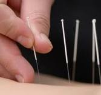

O que é Acupuntura?
A acupuntura é uma arte milenar chinesa que surgiu há mais de 4.000 anos. É uma técnica de tratamento que faz parte da Medicina Tradicional Chinesa e utiliza agulhas em pontos específicos da pele, visando o equilíbrio energético. Também podem ser utilizados outros recursos terapêuticos como laserterapia, ventosas, eletroacupuntura e moxabustão.
Como a Acupuntura age?
A acupuntura reduz as substâncias pró-inflamatórias, aumenta as substâncias antiinflamatórias, libera hormônios, neurotransmissores e, dessa forma, promove a redução de dores pelo corpo, melhora o bem-estar e a qualidade de vida.
Constitui um método terapêutico cientificamente comprovado e eficaz.
A Acupuntura dói?
Os locais dos pontos de acupuntura são ricos em terminações nervosas, o que torna a região mais sensível. De qualquer forma, a dor da acupuntura é suportável, geralmente menor do que se imagina antes de realizar a sessão.
Quem se beneficia com a Acupuntura?
Principais Indicações:
|
|
|
Existe contra-indicação?
É importante que seja realizada por pessoas habilitadas, capazes de um diagnóstico adequado e com indicação precisa de tratamento. Quando realizada por médicos especialistas, não foram observados quaisquer efeitos colaterais como os encontrados nos medicamentos em geral.